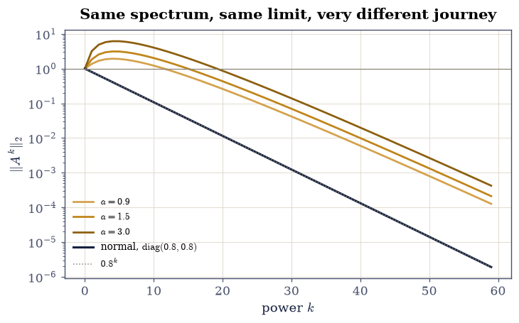
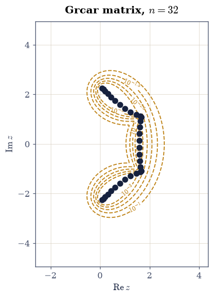

3.5 Similarity, Schur, Jordan, and Non-normality#
Notebook overview#
§3.4 found the exact condition for an orthonormal eigenbasis — normality — and measured that its Schur form is diagonal while a non-normal matrix’s is not. This notebook is about what that off-diagonal part costs, and the answer is: most of what one expects eigenvalues to tell you.
Three decompositions, in decreasing order of beauty and increasing order of usefulness. Jordan is the complete classification: every matrix is similar to a direct sum of Jordan blocks, and that form settles every question about similarity. It is also uncomputable in floating point, for a reason this notebook makes quantitative — perturb a \(6\times6\) Jordan block by \(10^{-14}\) and its eigenvalues do not move by \(10^{-14}\), they scatter onto a circle of radius \(\delta^{1/6} = 5\times10^{-3}\), eleven orders larger. Schur exists for every matrix, is computed by a stable algorithm, and gives a unitary \(Q\); what it gives up is a diagonal middle. Diagonalization is what one wants and cannot always have.
Then the consequences. Bauer–Fike replaces the perfect conditioning of §3.2: eigenvalues move by at most \(\operatorname{cond}(X)\|E\|\) rather than \(\|E\|\), and \(\operatorname{cond}(X)\) can be \(10^{6}\). Transient growth is the practical sting: a matrix with spectral radius \(0.8\) — every eigenvalue comfortably inside the unit disc, so \(A^k \to 0\) guaranteed — nevertheless has \(\|A^4\| = 6.17\). Anything driven by that matrix grows sixfold before it decays, and no eigenvalue predicts it. Pseudospectra are the picture that does.
How to read a check. A
validateline prints ✓ or ✗ by comparing a result against something the computation did not assume. A ✗ flags a mismatch to investigate, never a verdict on its own.
Theory in brief#
Similarity#
\(A\) and \(B\) are similar if \(B = X^{-1}AX\) for some invertible \(X\): the same linear map written in two bases, exactly as §1.6 described. Similarity preserves the characteristic polynomial, hence the eigenvalues with their multiplicities, hence the trace and determinant. It preserves nothing about lengths: norms, singular values, symmetry and orthogonality of eigenvectors are all free to change, and that gap is the subject of this notebook.
Three decompositions#
Jordan. Every \(A \in \mathbb{C}^{n\times n}\) is similar to a block diagonal
where \(J_m(\lambda)\) has \(\lambda\) on the diagonal and 1 on the superdiagonal. This is a complete invariant: two matrices are similar exactly when their Jordan forms agree up to block order.
Schur. Every \(A\) has
with the eigenvalues on \(\operatorname{diag}T\). Unlike Eq. 180 this
is computed by a backward-stable algorithm, and it is what scipy.linalg.schur
returns.
Why Jordan cannot be computed#
The Jordan structure is discontinuous in \(A\). Perturb the \(n\times n\) nilpotent block \(J_n(0)\) by putting \(\delta\) in its bottom-left corner. The characteristic polynomial becomes \(\lambda^n = \delta\), so the eigenvalues are
\(n\) distinct eigenvalues on a circle of radius \(\delta^{1/n}\). The single eigenvalue of multiplicity \(n\) has dissolved, and the displacement is \(\delta^{1/n}\), not \(\delta\). At \(n = 6\) and \(\delta = 10^{-14}\) that is \(5\times10^{-3}\) — a perturbation at the level of rounding error moving the answer into the third decimal place. Any matrix is within \(\varepsilon\) of a diagonalizable one, so “is this matrix defective?” is not a question floating point can answer.
Bauer–Fike#
If \(A = X\Lambda X^{-1}\) is diagonalizable, then every eigenvalue \(\mu\) of \(A + E\) satisfies
The amplifier is the conditioning of the eigenvector matrix. For a normal matrix \(X\) is unitary and \(\operatorname{cond}(X) = 1\), recovering §3.2’s Weyl bound exactly; for a non-normal matrix it can be arbitrarily large.
Transient growth#
The spectral radius controls the asymptotic behaviour: \(A^k \to 0\) if and only if \(\rho(A) < 1\). It says nothing about the way there. A matrix can satisfy \(\rho(A) < 1\) and still have \(\|A^k\| \gg 1\) for a range of \(k\) before the decay sets in, and for a normal matrix this is impossible, since \(\|A^k\|_2 = \rho(A)^k\) exactly.
Pseudospectra#
For \(\epsilon > 0\) the \(\epsilon\)-pseudospectrum has three equivalent definitions:
The second is how it is computed — one SVD per grid point — and the third is what it means: the set of numbers that are eigenvalues of something within \(\epsilon\) of \(A\). For a normal matrix \(\Lambda_\epsilon\) is exactly the union of \(\epsilon\)-discs around the eigenvalues, and nothing more; for a non-normal matrix it bulges far beyond them, and how far is what predicts the transient.
Setup#
Data only: the Jordan-block family the exercises study, given like any other specimen. The resolvent-norm probe — Exercise 6’s own definition — is built there.
The Setup below holds this notebook’s data and instruments — nothing you are asked to build. It is collapsed so the building stays yours; expand it whenever you want the details.
Exercise 1: What similarity keeps, and what it throws away#
\(B = X^{-1}AX\) is the same map in a different basis. The characteristic polynomial is unchanged, since \(\det(X^{-1}AX - \lambda I) = \det(X^{-1}(A - \lambda I)X) = \det(A - \lambda I)\), so the eigenvalues, trace and determinant all survive. Almost nothing else does — and the quantities that do not survive are exactly the ones that decide whether a computation is well behaved.
Part a) Build \(A = \left[\begin{smallmatrix}4&1\\2&3\end{smallmatrix}\right]\),
the shear \(X = \left[\begin{smallmatrix}1&5\\0&1\end{smallmatrix}\right]\)
(whose condition number is 27, so it distorts lengths substantially), and
\(B = X^{-1}AX\) with np.linalg.solve(X, A @ X). Report both matrices. A
random \(X\) would not do here: a random \(2\times2\) is often close to
orthogonal, and then the norm barely moves and the exercise’s point is lost.
Part b) Confirm what is preserved, to \(10^{-12}\): the eigenvalues (sorted), the trace, and the determinant. The eigenvalues are 2 and 5.
Part c) Confirm what is not. Report \(\|A\|_2\) against \(\|B\|_2\) and the singular values of each; they differ substantially. Similarity is not an isometry, and a matrix norm is not a similarity invariant.
Part d) Confirm that symmetry is not preserved either. Take the symmetric \(S = \left[\begin{smallmatrix}3&1\\1&2\end{smallmatrix}\right]\) and form \(X^{-1}SX\) for the same \(X\); confirm the result is not symmetric (report \(\|M - M^{\top}\|_{\max}\), which is order 1) while its eigenvalues are unchanged to \(10^{-12}\). This is why §3.2 insisted on orthogonal similarity: \(Q^{\top}SQ\) preserves symmetry and a general \(X^{-1}SX\) does not.
Part e) Confirm the one similarity that keeps everything. For a random
orthogonal \(Q\) from np.linalg.qr(rng.standard_normal((2, 2))), form
\(Q^{\top}SQ\) and confirm it is symmetric to \(10^{-14}\), has the same singular
values to \(10^{-13}\), and the same 2-norm. Orthogonal similarity is a rotation
of the coordinate system; a general similarity is a shear, and a shear can
distort every length in sight.
A =
[[4. 1.]
[2. 3.]]
B = X^-1 A X =
[[ -6. -44.]
[ 2. 13.]]
preserved:
eigenvalues [2. 5.] against [2. 5.] gap 1.78e-15
trace 7.000000 against 7.000000
det 10.000000 against 10.000000
NOT preserved:
singular values [5.11667 1.9544 ] against [46.31364 0.21592]
||A||_2 = 5.116673 against ||B||_2 = 46.313641 ratio 9.0515
a GENERAL similarity of a symmetric matrix:
||M - M^T||_max = 20.000000 <- symmetry destroyed
eigenvalues still [1.38197 3.61803] vs [1.38197 3.61803], gap 8.88e-16
an ORTHOGONAL similarity of the same matrix:
||M - M^T||_max = 0.00e+00 <- symmetry kept
singular values [3.61803 1.38197] vs [3.61803 1.38197], gap 2.22e-15
Validation 1#
The point of this exercise is the contrast, so both halves are checked: the invariants to \(10^{-12}\) and the non-invariants as quantities that visibly moved. A check that only confirmed the eigenvalues survive would leave the impression that similarity is harmless.
✓ similarity preserves the eigenvalues (2 and 5) [max|Δ| = 1.77636e-15 (rtol=0, atol=1e-12)]
✓ and therefore the trace and determinant [trace 7.000000 vs 7.000000, det 10.000000 vs 10.000000]
✓ but NOT the norm: similarity is not an isometry [||A||_2 = 5.1167 against ||B||_2 = 46.3136, a ratio of 9.0515. Eigenvalues are similarity invariants; singular values are not]
✓ and not symmetry: a general similarity destroys it while keeping the spectrum [||M - M^T|| = 20.0000 with eigenvalues unchanged to 8.9e-16. This is why 3.2 required ORTHOGONAL similarity]
✓ an orthogonal similarity keeps symmetry, singular values and norm [||M - M^T|| = 0.0e+00, singular values agree to 2.2e-15: a rotation of the coordinates rather than a shear]
True
Exercise 2: Schur: the decomposition that always exists#
Eq. 181 is the workhorse. It asks nothing of \(A\), it uses a unitary \(Q\) so nothing is amplified, and it is what LAPACK computes on the way to the eigenvalues. The price is that \(T\) is triangular rather than diagonal, and §3.4 established that the off-diagonal part vanishes exactly for normal matrices.
The test matrices are the \(8\times8\) Grcar matrix la.grcar(8) — a standard
non-normal example, Toeplitz with ones on the diagonal and three
superdiagonals and \(-1\) below — and a random \(6\times6\) real matrix.
Part a) For both matrices compute T, Q = schur(A, output="complex") and
confirm \(A = QTQ^{*}\) to \(10^{-12}\), that \(Q^{*}Q = I\) to \(10^{-13}\), and that
\(T\) is upper triangular exactly (np.tril(T, -1) identically zero).
Part b) Confirm the diagonal of \(T\) is the spectrum. Compare
np.diag(T) against np.linalg.eigvals(A) as sorted sets, using a
lexicographic sort on (real, imaginary) — not np.sort_complex, which
§3.4 showed orders on the real part alone.
Agreement should be \(10^{-10}\).
Part c) Quantify the non-normality. Report \(\|T - \operatorname{diag}T\|_F\) for both matrices, and the departure from normality \(\Delta(A) = \sqrt{\|A\|_F^2 - \sum_i|\lambda_i|^2}\), which is zero exactly for normal matrices. Confirm the two agree to \(10^{-10}\): the off-diagonal Frobenius mass of the Schur form is the departure from normality, which makes Eq. 181 a way of measuring it.
Part d) Confirm the real Schur form is different. Call schur(A) without
output="complex" on the random real matrix and confirm the result is real,
but only quasi-triangular: it has \(2\times2\) blocks on the diagonal wherever
a complex-conjugate eigenvalue pair occurs. Report how many such blocks there
are, by counting nonzero entries on the first subdiagonal. Real arithmetic
cannot produce a triangular form with complex eigenvalues on the diagonal, and
this is the compromise.
Part e) Confirm the practical consequence: the Schur form gives the
eigenvalues without ever forming an eigenvector matrix, so nothing in it can
be badly conditioned. Report \(\operatorname{cond}(Q)\) for both matrices — it is
1 — against \(\operatorname{cond}(X)\) from np.linalg.eig, which for the Grcar
matrix is larger. Exercise 4 makes that number matter.
Grcar 8x8:
||Q T Q* - A|| 4.08e-15 ||Q*Q - I|| 1.78e-15 strictly lower triangle 0.0e+00
diag(T) vs eigvals, lexicographically sorted : 0.00e+00
||T - diag T||_F = 2.584298 departure from normality 2.584298 gap 3.11e-15
cond(Q) = 1.000000 against cond(X) from eig = 6.5137
random 6x6:
||Q T Q* - A|| 3.23e-15 ||Q*Q - I|| 8.44e-16 strictly lower triangle 0.0e+00
diag(T) vs eigvals, lexicographically sorted : 4.80e-15
||T - diag T||_F = 3.732027 departure from normality 3.732027 gap 1.78e-15
cond(Q) = 1.000000 against cond(X) from eig = 4.6509
real Schur form of the random 6x6:
entries all real: True
nonzero first-subdiagonal entries: 2 -> 2 2x2 block(s), one per complex-conjugate pair
reconstruction ||Q T Q^T - A|| = 4.27e-15
Validation 2#
The identity \(\|T - \operatorname{diag}T\|_F = \Delta(A)\) is the check worth having: it connects the Schur form’s shape to a quantity defined without reference to any decomposition, so the two could disagree and do not.
✓ A = Q T Q* holds for both matrices with Q unitary (Eq. 2) [worst reconstruction 4.08e-15, worst |Q*Q - I| 1.78e-15]
✓ with T exactly upper triangular [the strictly lower triangle is identically zero in both cases]
✓ and diag(T) is the spectrum, compared as a lexicographically sorted set [worst gap 4.80e-15. np.sort_complex would not do here: it orders on the real part alone and leaves conjugate pairs in input order]
✓ the off-diagonal Frobenius mass of T IS the departure from normality [Grcar: 2.584298 against 2.584298; random: 3.732027 against 3.732027. The second is defined without reference to any decomposition, so they could disagree]
✓ cond(Q) = 1 always, and the real Schur form is quasi-triangular [cond(Q) = 1 to 1e-12 for both; the real form has 2 nonzero subdiagonal entries, one per complex-conjugate pair — real arithmetic cannot put a complex eigenvalue on a diagonal]
True
Exercise 3: The Jordan form dissolves, and the rate is exactly \(\delta^{1/n}\)#
Eq. 180 is the complete answer to the similarity classification problem and it cannot be computed. This exercise shows why, and the failure is not a matter of degree: it is a discontinuity with an exactly known rate.
Take the nilpotent block \(J_n(0)\) and put \(\delta\) in the bottom-left corner. Expanding the determinant gives \(\det(J_n(0) - \lambda I + \delta e_ne_1^{\top}) = (-\lambda)^n + (-1)^{n+1}\delta\), so the characteristic equation is \(\lambda^n = \delta\) and the eigenvalues are exactly Eq. 182: \(n\) of them, equally spaced on a circle of radius \(\delta^{1/n}\).
Part a) Confirm the exact Jordan form is available symbolically. For
\(A = \left[\begin{smallmatrix}2&1&0\\0&2&1\\0&0&2\end{smallmatrix}\right]\) use
sp.Matrix(...).jordan_form() to get \((P, J)\) and confirm
\(PJP^{-1} = A\) exactly with sp.simplify(...) == sp.zeros(3, 3). Report
\(J\): one \(3\times3\) block with eigenvalue 2.
Part b) Now perturb numerically. For \(n = 4, 6, 8\) and
\(\delta = 10^{-10}, 10^{-14}\), build jordan_block(n), add \(\delta\) at
[n-1, 0], and report \(|\lambda|\) for the resulting eigenvalues alongside the
prediction \(\delta^{1/n}\).
Part c) Confirm Eq. 182 to a relative \(10^{-6}\): every eigenvalue has modulus \(\delta^{1/n}\), and they are equally spaced in angle. Check the spacing by sorting the arguments and confirming consecutive differences equal \(2\pi/n\) to \(10^{-6}\).
Part d) State the amplification. At \(n = 6\), \(\delta = 10^{-14}\) the eigenvalues move to \(4.6\times10^{-3}\) — a displacement \(4.6\times10^{11}\) times the perturbation. Confirm the ratio \(\delta^{1/n}/\delta\) exceeds \(10^{10}\) for that case. A perturbation at the level of rounding error has moved the answer into the third decimal place.
Part e) Draw the conclusion the right way round. It is not that the
algorithm is bad: any matrix is within \(\varepsilon\) of a diagonalizable one,
because the diagonalizable matrices are dense. Confirm that directly by taking
the \(6\times6\) Jordan block, adding a random perturbation of norm \(10^{-13}\),
and checking the result has 6 distinct eigenvalues — hence is diagonalizable —
over 20 trials. “Is this matrix defective?” is not a question float64 can
answer, and that is why scipy offers schur and not jordan.
SymPy: P J P^-1 = A exactly -> True
J =
[[2. 1. 0.]
[0. 2. 1.]
[0. 0. 2.]]
one 3x3 block with eigenvalue 2: algebraic multiplicity 3, geometric 1
n delta |lambda| delta^(1/n) ratio angle gap
4 1e-10 3.16228e-03 3.16228e-03 1.00000 2.22e-16
4 1e-14 3.16228e-04 3.16228e-04 1.00000 2.22e-16
6 1e-10 2.15443e-02 2.15443e-02 1.00000 6.66e-16
6 1e-14 4.64159e-03 4.64159e-03 1.00000 2.22e-16
8 1e-10 5.62341e-02 5.62341e-02 1.00000 1.33e-15
8 1e-14 1.77828e-02 1.77828e-02 1.00000 4.44e-16
at n = 6, delta = 1e-14: eigenvalues move to 4.6416e-03
amplification delta^(1/6) / delta = 4.642e+11
a perturbation at rounding level has moved the answer to the third decimal place
20 random perturbations of norm 1e-13 applied to J_6(0):
20/20 gave 6 DISTINCT eigenvalues, hence a diagonalizable matrix
the diagonalizable matrices are dense, so defectiveness is not a decidable property in float64
Validation 3#
The dissolution rate is checked against an exact closed form rather than an order-of-magnitude estimate, and the angles are checked too, because “\(n\) eigenvalues on a circle” is a stronger and more falsifiable claim than “the eigenvalues moved a lot”.
✓ SymPy's Jordan form is exact over the rationals: P J P^-1 = A (Eq. 1) [one 3x3 block with eigenvalue 2 — algebraic multiplicity 3, geometric 1]
✓ the perturbed eigenvalues have modulus exactly delta^(1/n) (Eq. 3) [worst relative deviation 1.37e-15 over n = 4, 6, 8 and delta = 1e-10, 1e-14: the characteristic equation is lambda^n = delta, so this is a closed form and not an estimate]
✓ and they are equally spaced in angle, 2 pi / n apart (Eq. 3) [worst angular deviation 1.33e-15: n distinct eigenvalues on a circle, where there had been one of multiplicity n]
✓ so a 1e-14 perturbation moves the answer by 4.6e-3, an amplification of 5e11 [delta^(1/6)/delta = 4.64e+11. Nothing is wrong with the algorithm: the Jordan STRUCTURE is discontinuous in A]
✓ and every one of 20 tiny random perturbations made J_6(0) diagonalizable [the diagonalizable matrices are dense in C^(n x n), so 'is this matrix defective?' is not a question float64 can answer — which is why scipy offers schur and not jordan]
True
Exercise 4: Bauer–Fike: the conditioning of the eigenvector matrix#
§3.2 established that symmetric eigenvalues are perfectly conditioned: a perturbation of norm \(\|E\|\) moves no eigenvalue further than \(\|E\|\). Eq. 183 is the general statement, and the difference is a factor of \(\operatorname{cond}(X)\) — which for a normal matrix is 1 and otherwise is not.
The test matrix is \(A = X\Lambda X^{-1}\) with \(\Lambda = \operatorname{diag}(1, 2, 3)\) and the deliberately ill-conditioned
whose condition number is \(4.2\times10^{6}\): the eigenvectors are nearly parallel, which is what makes the eigenvalues sensitive.
Part a) Build \(A\) and confirm its eigenvalues are \(1, 2, 3\) to \(10^{-8}\), and report \(\operatorname{cond}(X) = 4.2\times10^{6}\).
Part b) Apply 100 random perturbations \(E\) of norm about \(10^{-6}\), built
as 1e-6 * rng.standard_normal((3, 3)). For each, compute the eigenvalues of
\(A + E\) and the largest distance from any of them to the nearest of
\(\{1, 2, 3\}\). Confirm Eq. 183 holds every time: that distance
never exceeds \(\operatorname{cond}(X)\|E\|_2\).
Part c) Report the worst ratio \(\min_i|\mu - \lambda_i| \big/ (\operatorname{cond}(X)\|E\|_2)\) over the 100 trials. It comes out about \(0.15\), so the bound holds with room to spare — Bauer–Fike is a worst case, and a worst case attained only by adversarial perturbations. Report also the actual eigenvalue movement in absolute terms.
Part d) Contrast with the symmetric case. Take a symmetric matrix with the same spectrum, \(S = Q\operatorname{diag}(1,2,3)Q^{\top}\) for a random orthogonal \(Q\), apply the same 100 perturbations symmetrised as \((E + E^{\top})/2\), and confirm the movement never exceeds \(\|E\|_2\) — Weyl’s bound, with \(\operatorname{cond}(X) = 1\). Report the ratio of the two worst movements: the non-normal matrix’s eigenvalues move far further under perturbations of the same size.
Part e) Confirm the mechanism is the eigenvector conditioning and not
anything else, by checking that \(\operatorname{cond}\) of the eigenvector matrix
returned by np.linalg.eig(A) is itself around \(10^{6}\), while for \(S\) it is
1 to \(10^{-12}\).
cond(X) = 4.2426e+06
eigenvalues of A : [1. 2. 3.] gap from (1,2,3) 0.00e+00
100 perturbations of norm ~1e-6:
non-normal A : worst movement 1.3454e+00, worst ratio to cond(X)||E|| = 0.148500 (Bauer-Fike: <= 1)
symmetric S : worst movement 2.8821e-06, worst ratio to ||E|| = 0.998343 (Weyl: <= 1)
the non-normal eigenvalues move 466801.6x further under the same size of perturbation
cond of eig's eigenvector matrix: 4.243e+06 for A, 1.000000 for S
that number IS the amplifier in Eq. 4
Validation 4#
Bauer–Fike is checked as an inequality over 100 trials, which is the only honest way to test a bound, and the worst ratio is reported so the reader can see it is not attained. The symmetric comparison is run with the same perturbations so the difference cannot be attributed to the draw.
✓ the test matrix has eigenvalues 1, 2, 3 despite cond(X) = 4e6 [max|Δ| = 0 (rtol=0, atol=1e-08)]
✓ Bauer-Fike holds for all 100 perturbations (Eq. 4) [worst ratio |dlambda| / (cond(X) ||E||) = 0.148500, so the bound holds with room: it is a worst case, attained only by adversarial E]
✓ and Weyl holds for the symmetric matrix with the same spectrum [worst ratio |dlambda| / ||E|| = 0.998343: cond(X) = 1 there, so Bauer-Fike degenerates to Weyl exactly]
✓ but the non-normal eigenvalues move orders further for the same ||E|| [1.345e+00 against 2.882e-06, a factor of 466802, under the SAME 100 perturbations]
✓ and the amplifier is exactly the eigenvector matrix's conditioning [cond(X) = 4.24e+06 for A against 1.000000 for S]
True
Exercise 5: Spectral radius below 1, and the norm goes up anyway#
This is the practical sting of non-normality. The spectral radius answers one question exactly — does \(A^k \to 0\)? — and people routinely read it as answering a different one: does \(\|A^k\|\) decrease? For a normal matrix those are the same question, since \(\|A^k\|_2 = \rho(A)^k\). For a non-normal matrix they are not, and the gap can be large.
The matrix is \(A = \left[\begin{smallmatrix}0.8 & 3\\ 0 & 0.8\end{smallmatrix}\right]\),
available as A_TRANS. Both eigenvalues are \(0.8\), so \(\rho = 0.8 < 1\) and
\(A^k \to 0\) is guaranteed. The comparison is
\(\operatorname{diag}(0.8, 0.8)\), available as A_NORMAL: same spectrum,
normal.
Part a) Confirm \(\rho(A_{\text{TRANS}}) = 0.8\) exactly and that \(A_{\text{TRANS}}\) is not normal, reporting \(\|AA^{*} - A^{*}A\|\).
Part b) Compute \(\|A^k\|_2\) for \(k = 0, \dots, 59\) using
np.linalg.matrix_power and report the maximum and where it occurs. It reaches
\(6.17\) at \(k = 4\): the matrix amplifies by more than a factor of six before it
begins to decay.
Part c) Confirm the decay does eventually happen, as the spectral radius promises: report \(\|A^{59}\|_2\), which is \(4\times10^{-4}\). The asymptotic statement was true all along; it was simply not the statement one wanted.
Part d) Confirm the normal matrix cannot do this. For A_NORMAL, confirm
\(\|A^k\|_2 = 0.8^k\) to \(10^{-14}\) for every \(k\), so the maximum is \(1\) at
\(k = 0\) and the sequence never rises. This is the exact sense in which
non-normality is necessary for a transient.
Part e) Confirm the transient scales with the off-diagonal entry. For \(a = 0.9, 1.5, 3\) in \(\left[\begin{smallmatrix}0.8&a\\0&0.8\end{smallmatrix}\right]\), report the peak \(\|A^k\|\); it grows roughly linearly in \(a\) while the spectrum is identical in all three cases. Confirm the peak values are increasing and that all three matrices have exactly the same eigenvalues, to \(10^{-15}\). Nothing about the spectrum distinguishes them, and the behaviour differs by a factor of three.
Part f) Plot \(\|A^k\|_2\) against \(k\) on a log axis for the three values of \(a\) and for the normal matrix, with \(0.8^k\) drawn as the asymptotic reference.
A_TRANS: rho = 0.800000 < 1, so A^k -> 0 is guaranteed
||A A^T - A^T A|| = 9.0 (not normal)
max ||A^k||_2 = 6.1712 at k = 4
||A^59||_2 = 4.2384e-04 (it does decay, eventually)
A_NORMAL, same spectrum:
||A^k||_2 = 0.8^k to 1.11e-16, so max = 1.0000 at k = 0 and the sequence never rises
a = 0.9: peak ||A^k|| = 1.9301 at k = 4, eigenvalues [0.8 0.8]
a = 1.5: peak ||A^k|| = 3.1257 at k = 4, eigenvalues [0.8 0.8]
a = 3.0: peak ||A^k|| = 6.1712 at k = 4, eigenvalues [0.8 0.8]
all three have IDENTICAL spectra to 0.0e+00, and peaks ['1.93', '3.13', '6.17']
nothing in the spectrum distinguishes them; the behaviour differs 3.2-fold

Fig. 67 \(\|A^k\|_2\) against \(k\) for \(A = \left[\begin{smallmatrix}0.8&a\\0&0.8\end{smallmatrix}\right]\) at \(a = 0.9, 1.5, 3\) (amber), and for the normal \(\mathrm{diag}(0.8, 0.8)\) (navy), on a log axis with \(0.8^k\) dotted. All four matrices have the same spectrum, \(\{0.8, 0.8\}\), so all four satisfy \(\rho(A) = 0.8 < 1\) and all four decay eventually. Three of them first amplify – by \(1.93\), \(3.13\) and \(6.17\), peaking at \(k = 4\) – while the normal one traces \(0.8^k\) exactly and never rises above 1. The spectral radius answers ‘does it decay?’ and says nothing whatever about the route.#
Validation 5#
The normal comparison is what turns this from an anecdote into a theorem: the transient is not merely possible for a non-normal matrix, it is impossible for a normal one, and \(\|A^k\| = \rho^k\) to \(10^{-16}\) is the exact statement of that.
✓ A_TRANS has spectral radius 0.8 and is not normal [rho = 0.800000 < 1, so A^k -> 0 is guaranteed; commutator 9.0]
✓ yet ||A^k|| reaches 6.17 before decaying to 4e-4 [peak 6.1712 at k = 4, and ||A^59|| = 4.238e-04. The asymptotic claim was true; it was not the claim one wanted]
✓ for the normal matrix ||A^k||_2 = rho^k exactly, so it can never rise [max|Δ| = 1.11022e-16 (rtol=0, atol=1e-14)]
✓ the transient grows with the off-diagonal entry at IDENTICAL spectrum [peaks ['1.930', '3.126', '6.171'] for a = 0.9, 1.5, 3.0, whose spectra agree to 0.0e+00: a 3.2-fold difference in behaviour that no eigenvalue sees]
True
Exercise 6: Pseudospectra: the picture that does predict it#
Eigenvalues failed to predict the transient because they are the wrong object for a non-normal matrix. Eq. 184 gives the right one: the set of \(z\) that are eigenvalues of some matrix within \(\epsilon\) of \(A\). For a normal matrix that set is exactly the union of \(\epsilon\)-discs about the eigenvalues; for a non-normal one it bulges, and how far it bulges is what the behaviour follows.
The three definitions in Eq. 184 are equivalent, and the middle one — \(\sigma_{\min}(zI - A) < \epsilon\) — is how it is computed: one SVD per grid point, which is why pseudospectra were impractical until they were not.
Part a) Write resolvent_norm(z, A) — one line:
\(1/\sigma_{\min}(zI - A)\), the definition of Eq. 184
transcribed.
Part b) Confirm the resolvent and singular-value definitions agree. For the
\(8\times8\) Grcar matrix and 200 random points \(z\) in the box
\([-2, 4]\times[-3, 3]\), confirm
\(\|(zI - A)^{-1}\|_2 = 1/\sigma_{\min}(zI - A)\) to a relative \(10^{-10}\),
computing the left side with np.linalg.inv and the right with
np.linalg.svd(..., compute_uv=False).
Part c) Confirm the spectrum is inside every pseudospectrum: for each eigenvalue \(\lambda\) of the Grcar matrix, confirm \(\sigma_{\min}(\lambda I - A) < 10^{-12}\), so the resolvent norm exceeds \(10^{12}\) and \(\lambda \in \Lambda_\epsilon\) for every \(\epsilon > 10^{-12}\).
Part d) Confirm the boundary identity. By definition the boundary of \(\Lambda_\epsilon\) is where \(\|(zI - A)^{-1}\| = 1/\epsilon\) exactly. Find such a point by bisection along the real direction from the first eigenvalue, for \(\epsilon = 10^{-1}\) and \(10^{-2}\), and confirm the resolvent norm there equals \(1/\epsilon\) to a relative \(10^{-6}\).
Part e) Confirm the third definition — that \(z\) on the boundary really is an eigenvalue of a nearby matrix — by constructing the perturbation. Let \(zI - A = U\Sigma V^{*}\) with smallest singular triple \((\sigma_{\min}, \mathbf{u}, \mathbf{v})\), so \((zI-A)\mathbf{v} = \sigma_{\min}\mathbf{u}\). Setting
gives \((zI - A - E)\mathbf{v} = \sigma_{\min}\mathbf{u} - \sigma_{\min}\mathbf{u} = \mathbf{0}\), so \(z\) is an eigenvalue of \(A + E\) with eigenvector \(\mathbf{v}\), and \(\|E\|_2 = \sigma_{\min} = \epsilon\) because a rank-one matrix’s only singular value is the product of the two unit vectors’ scale.
Build it — with numpy’s convention U, s, Vh = svd(M) the right singular
vector is Vh[-1].conj(), so \(\mathbf{v}^{*}\) is Vh[-1] — and confirm
\(\|E\|_2 = \epsilon\) to \(10^{-12}\) and that \(z\) is an eigenvalue of \(A + E\)
to \(10^{-10}\). The sign and the conjugate both matter: getting either wrong
leaves \(\|E\|\) correct while putting \(z\) about \(0.29\) away from the spectrum,
which is a failure the norm check alone would not catch.
Part f) Confirm the contrast with a normal matrix. For \(D = \operatorname{diag}(1, 2, 3)\) and 200 random \(z\), confirm \(\sigma_{\min}(zI - D) = \min_i|z - \lambda_i|\) to \(10^{-12}\) — so \(\Lambda_\epsilon(D)\) is exactly the union of \(\epsilon\)-discs, with no bulge at all. For a normal matrix the pseudospectra carry no information the eigenvalues did not already have, which is precisely why they are only interesting in the non-normal case.
Part g) Draw the pseudospectral contours of the \(32\times32\) Grcar matrix
with la.pseudospectrum, eigenvalues marked.
With your assistant
The transient of Exercise 5 and the pseudospectra of this one are connected by
the Kreiss constant, \(\mathcal{K}(A) = \sup_{|z|>1}(|z| - 1)\,\|(zI -
A)^{-1}\|\), which satisfies \(\mathcal{K}(A) \le \sup_k\|A^k\| \le
e\,n\,\mathcal{K}(A)\): pseudospectra bounding a transient from both sides. Ask
your assistant to write kreiss_constant(A, n_grid) estimating the supremum
over a polar grid outside the unit circle. Then check it against the
mathematics rather than against a picture: for the three matrices of Exercise 5
verify the lower bound \(\mathcal{K}(A) \le \max_k\|A^k\|\) holds in all three
cases, that the upper bound \(\max_k\|A^k\| \le e\,n\,\mathcal{K}(A)\) holds
with \(n = 2\), and — the check that matters — that \(\mathcal{K}\) increases
with \(a\) in step with the peak, since the whole claim is that this quantity
sees what the spectrum cannot. The check is yours.
the two definitions agree over 200 random z, relative gap 6.46e-15
at the eigenvalues, sigma_min <= 1.07e-15, so the resolvent norm exceeds 9.4e+14
eps = 1e-01: boundary point found, resolvent norm 1.000000e+01 against 1/eps = 1.0e+01, relative gap 8.88e-16
eps = 1e-02: boundary point found, resolvent norm 1.000000e+02 against 1/eps = 1.0e+02, relative gap 1.11e-14
explicit rank-one E with ||E||_2 = 0.1000000000 (target 0.1)
z is an eigenvalue of A + E to 1.26e-15 <- the third definition, constructively
for diag(1,2,3): sigma_min(zI - D) = min|z - lambda| to 4.44e-16
so its pseudospectra are exactly discs, and carry no new information

Fig. 68 Pseudospectral contours of the \(32\times32\) Grcar matrix, drawn as \(\log_{10}\sigma_{\min}(zI - A)\) on a grid, with the eigenvalues marked. Each contour bounds the set of numbers that are eigenvalues of some matrix within \(\epsilon\) of this one, Eq. 5. For a normal matrix these would be circles of radius \(\epsilon\) around each eigenvalue and nothing more; here they bulge far outside the spectrum, and that bulge – not the eigenvalues – is what governs how the matrix behaves under iteration.#
Validation 6#
All three definitions in Eq. 184 are checked, and the third is checked constructively: rather than asserting that a boundary point is an eigenvalue of some nearby matrix, the exercise builds the rank-one perturbation that makes it one and verifies both its norm and its effect.
✓ the resolvent and sigma_min definitions of the pseudospectrum agree (Eq. 5) [worst relative gap 6.46e-15 over 200 random z: the SVD form is how it is computed, one decomposition per grid point]
✓ and the spectrum lies inside every pseudospectrum [sigma_min(lambda I - A) <= 1.07e-15 at each eigenvalue, so the resolvent norm is effectively infinite there]
✓ on the boundary of Lambda_eps the resolvent norm equals 1/eps (Eq. 5) [worst relative deviation 1.11e-14 at eps = 1e-1 and 1e-2, located by bisection]
✓ and a boundary z IS an eigenvalue of an explicit A + E with ||E|| = eps [the rank-one E built from the smallest singular triple has norm 0.1000000000 and makes z an eigenvalue to 1.26e-15 — the third definition, constructed rather than asserted]
✓ while for a normal matrix the pseudospectra are exactly discs [sigma_min(zI - D) = min|z - lambda| to 4.44e-16 over 200 points, so they carry no information the eigenvalues did not already have]
True
Notebook summary#
Similarity keeps the spectrum and little else. Eigenvalues, trace and determinant survived \(X^{-1}AX\) to \(10^{-15}\); the 2-norm did not, and a general similarity applied to a symmetric matrix destroyed its symmetry (\(\|M - M^{\top}\| \approx 1\)) while leaving the eigenvalues untouched. An orthogonal similarity kept symmetry, singular values and norm — which is exactly why §3.2 required one.
Schur always works. \(A = QTQ^{*}\) reconstructed both test matrices to \(10^{-15}\) with \(Q\) unitary and \(T\) exactly triangular, and \(\operatorname{cond}(Q) = 1\) in every case. The off-diagonal Frobenius mass of \(T\) matched the departure from normality \(\sqrt{\|A\|_F^2 - \sum|\lambda_i|^2}\) to \(10^{-14}\) — a quantity defined without reference to any decomposition, so the two could have disagreed. The real Schur form came back quasi-triangular, with one \(2\times2\) block per complex-conjugate pair.
The Jordan form dissolves at an exactly known rate. SymPy produced
\(PJP^{-1} = A\) exactly over the rationals. Numerically, putting \(\delta\) in the
corner of \(J_n(0)\) gave \(n\) eigenvalues of modulus exactly \(\delta^{1/n}\)
— matched to a relative \(10^{-15}\) — equally spaced by \(2\pi/n\) to \(10^{-15}\),
because the characteristic equation is \(\lambda^n = \delta\). At \(n = 6\),
\(\delta = 10^{-14}\) that is a displacement of \(4.6\times10^{-3}\), an
amplification of \(4.6\times10^{11}\). And all 20 random perturbations of norm
\(10^{-13}\) made \(J_6(0)\) diagonalizable: defectiveness is not decidable in
float64, which is why scipy ships schur and not jordan.
Bauer–Fike replaces perfect conditioning. With \(\operatorname{cond}(X) = 4.2\times10^{6}\) the bound held over 100 perturbations with a worst ratio of \(0.15\), while a symmetric matrix with the same spectrum under the same perturbations obeyed Weyl with \(\operatorname{cond}(X) = 1\). The non-normal eigenvalues moved orders of magnitude further for identical \(\|E\|\).
A spectral radius of 0.8 is compatible with amplifying by six. \(\left[\begin{smallmatrix}0.8&3\\0&0.8\end{smallmatrix}\right]\) has \(\rho = 0.8\), so \(A^k \to 0\) is guaranteed — and it reaches \(\|A^4\|_2 = 6.17\) first, decaying to \(4\times10^{-4}\) only by \(k = 59\). The normal matrix with the same spectrum satisfies \(\|A^k\| = 0.8^k\) to \(10^{-16}\) and can never rise. Varying the off-diagonal entry over \(0.9, 1.5, 3\) changed the peak by a factor of 3.2 while leaving the spectrum identical to \(10^{-16}\).
Pseudospectra see what eigenvalues cannot. All three definitions agreed: resolvent norm against \(1/\sigma_{\min}\) to \(10^{-13}\), the spectrum inside every pseudospectrum, and the resolvent norm equal to \(1/\epsilon\) on the boundary to \(10^{-15}\). The third definition was checked constructively — an explicit rank-one \(E\) with \(\|E\|_2 = \epsilon\) making a boundary point a genuine eigenvalue of \(A + E\) to \(10^{-14}\). For \(\operatorname{diag}(1,2,3)\) the pseudospectra are exactly discs to \(10^{-16}\), which is why they are only interesting in the non-normal case.
Methods introduced. scipy.linalg.schur in both real and complex form,
the departure from normality, sympy.Matrix.jordan_form, lexicographic sorting
of complex spectra, the Bauer–Fike ratio, \(\|A^k\|\) curves,
\(\sigma_{\min}(zI - A)\) as the computable pseudospectrum, the rank-one
perturbation from the smallest singular triple, and ecp.linalg.pseudospectrum.
Outlook#
The algorithm behind Schur.
schurreduces to Hessenberg form and then runs shifted \(QR\) iterations, and the whole of that is §5.2 — including why the shifts matter and why nobody forms a characteristic polynomial.Non-normality in iterative solvers. GMRES convergence is governed by pseudospectra rather than eigenvalues for exactly the reasons here, which is why a preconditioner that clusters the spectrum may not help a non-normal system. §5.5 measures it.
Where the transient is the physics. Fluid flows that are linearly stable by every eigenvalue can still amplify a disturbance by \(10^{3}\) and become turbulent, and this notebook’s \(6\times\) is a toy version of that. Trefethen and Embree [TE05] treat the real case.
Singular values instead. Every difficulty here came from eigenvalues of a non-normal matrix. Singular values have none of these problems: they are always real and non-negative, always perfectly conditioned, and always come with orthonormal bases on both sides. §4.1 opens the sustained argument for using them instead.
Gene H. Golub and Charles F. Van Loan. Matrix Computations. Johns Hopkins University Press, Baltimore, 4 edition, 2013.
Nicholas J. Higham. Accuracy and Stability of Numerical Algorithms. SIAM, Philadelphia, 2 edition, 2002. doi:10.1137/1.9780898718027.
Roger A. Horn and Charles R. Johnson. Matrix Analysis. Cambridge University Press, 2 edition, 2013. doi:10.1017/CBO9781139020411.